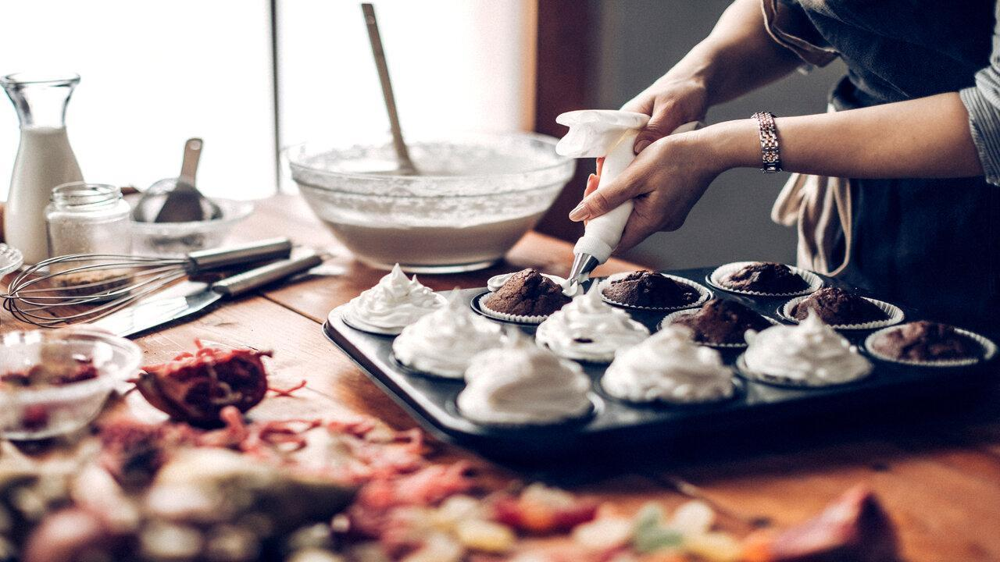
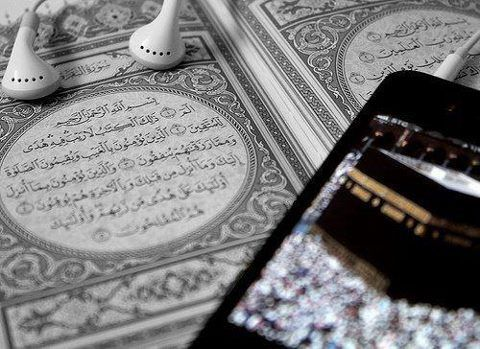

Hobbies are great distractionn, from the worries and troubles, that plague daily living.
Reading- One of my biggest interests is reading, it plays a big role on my life, because reading helps in stress reduction, thus, making me calm down. It also gives me knowledge and helps me in improving my memory.
Writing- Writing helps me to express my thoughts, feelings, emotions and mood. Even though, I’m an ambivert.
I still express myself better in writing. When I’m sad, happy, or angry I write my thoughts down, when there is special and memorable events or
even just a normal day, I write what has happen to that day down. It’s serves as my motivation, happiness, and passion. Journaling and diary is one of my favorites.
Cooking and Baking-Cooking or baking is one of my favorite thing to do, especially in my free times,
I get to cook, and I can let others taste my food. I can eat, and I enjoy it more,
when I know I work hard on it, and it feels so fulfilling when my family says, “You can make your own restaurant when you grow up”.

Listening to Quran Recitation-Listening to Quran and understanding the meaning of the words of my lord,
gives me guidance and reason why I’m I in this world. The Quran
has so much beauty in it. It lets me hear and read stories that no one has ever told me,
it gives me advice for a journey in a lifetime. Every time I finish studying, I listen
to Quran recitation because it soothes my mind and my heart, and it gives me calmness.

Jogging-When it is morning or when I feel stressed and feel I’m locked inside
our house, I go outside and take a jog with my mother or by myself and take a time to
enjoy the beauty of nature. Just seeing the green trees, cloudy and clear blue sky, breathing
on fresh air. It is simply one of my escapes out of my sadness. It always
makes me go back every time. And turns out to be one of my habits.
Here is the navigation track for the links in my website